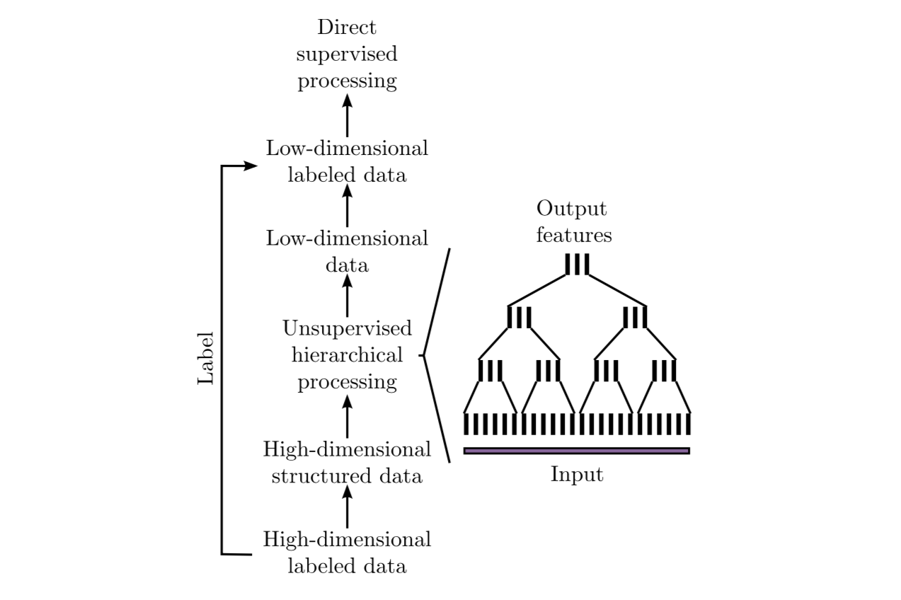
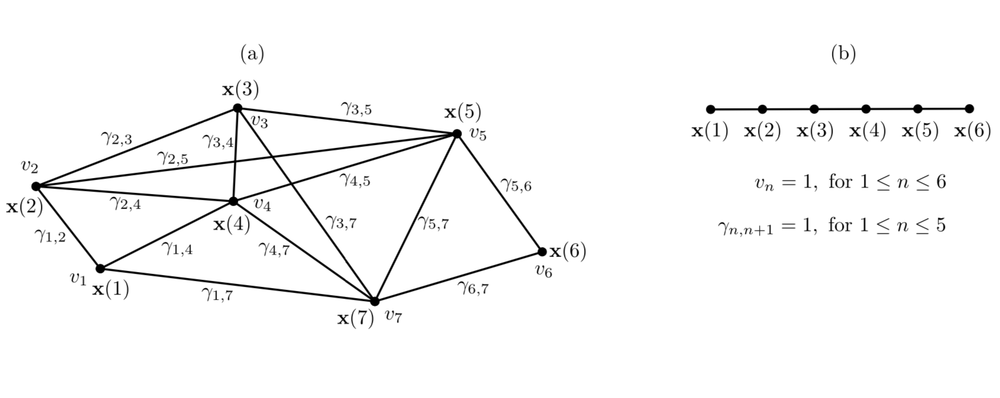

Graph-based SFA (GSFA)¶
CodeSnippet
You can download all the code on this page from the code snippets directory
- Extension of Slow Feature Analysis (SFA)
- Supervised dimensionality reduction method
- Trained with a graph in which the vertices are the samples and the edges represent similarities of the corresponding labels
Graph-based Slow Feature Analysis (GSFA) is a supervised extension of SFA [1] that relies on a particular graph structure to extract features that preserve label similarities. More precisely, the algorithm utilizes training graphs in which the vertices are the samples, and the edges represent similarities of the corresponding labels. Later, we use the acquired low-dimensional representation of the original data to train a typical supervised learning algorithm.
In this example, we briefly explain the idea behind GSFA [2] and specify the optimization task it solves. Moreover, we show the efficiency of GSFA compared to a support vector machine (SVM) on a toy dataset and introduce an approach that makes the classification task more interpretable.
Table of contents
1. Classification using GSFA¶
To show the benefits of the model and its efficiency, we solve a classification task based on the ‘breast_cancer’ dataset of the scikit-learn library. More precisely, we use an SVM classifier as a baseline method and then demonstrate the effect of preprocessing the data via GSFA.
The breast cancer dataset is a classical and straightforward binary classification dataset. Features are computed from a digitized image of a fine needle aspirate (FNA) of breast mass. They describe characteristics of the cell nuclei present in the image. It can be found on UCI Machine Learning Repository.
Number of instances: 569
Number of attributes: 30 numeric, predictive attributes and the class
Attribute information:
- radius (mean of distances from center to points on the perimeter)
- texture (standard deviation of gray-scale values)
- perimeter
- area
- smoothness (local variation in radius lengths)
- compactness (perimeter² / area - 1.0)
- concavity (severity of concave portions of the contour)
- concave points (number of concave portions of the contour)
- symmetry
- fractal dimension (“coastline approximation” - 1)
The mean, standard error, and “worst” or largest (mean of the three worst/largest values) of these features were computed for each image, resulting in 30 features. For instance, field 0 is “Mean Radius”, field 10 is “Radius SE”, field 20 is “Worst Radius”.
Class:
- WDBC-Malignant
- WDBC-Benign
First, we import the usual data science modules and mdp to use its GSFA implementation and other data processing tools.
>>> import matplotlib
>>> import matplotlib.pyplot as plt
>>> from sklearn import (datasets, model_selection, metrics)
>>> from sklearn.svm import SVC
Now, from sklearn we load the breast_cancer dataset. We’ll use 20% of the data for testing.
>>> data, label = datasets.load_breast_cancer(return_X_y=True)
>>> data_train, data_test, label_train, label_test = \
... model_selection.train_test_split(data, label, test_size=0.2)
We get the baseline SVM classification quality as follows:
SVM performance on training data:
>>> SVM_clf_train = SVC(gamma='auto')
>>> SVM_clf_train.fit(data_train, label_train)
>>> SVM_prediction_train = SVM_clf_train.predict(data_train)
>>> print("SVM train score: ",
... metrics.accuracy_score(label_train, SVM_prediction_train))
SVM train score: 1.0
SVM performance on test data:
>>> SVM_clf_test = SVC(gamma='auto')
>>> SVM_clf_test.fit(data_train, label_train)
>>> SVM_prediction_test = SVM_clf_test.predict(data_test)
>>> print("SVM test score: ",
... metrics.accuracy_score(label_test, SVM_prediction_test))
SVM test score: 0.5877192982456141
Next, we train a GSFA model on the training data such that it computes the slowest features possible according to the GSFA optimization problem. Since the label information is encoded in the graph connectivity, the low-dimensional output is highly predictive for the labels.
We set the output dimension parameter to 2, which allows us to represent the data in 2D coordinates.
>>> output_dim = 2
>>> GSFA_n = mdp.nodes.GSFANode(output_dim=output_dim)
>>> GSFA_n.train(data_train, train_mode=("classification", label_train, 1))
>>> GSFA_n.stop_training()
This yields projections of the training and test data to the obtained feature space.
>>> GSFA_train = GSFA_n.execute(data_train)
>>> GSFA_test = GSFA_n.execute(data_test)
We depict the reduced training and test data on a 2D plot as follows:
>>> colors = ['red', 'blue']
>>> f = plt.figure(figsize=(15,6))
>>> ax = f.add_subplot(121)
>>> ax2 = f.add_subplot(122)
>>> ax.scatter(GSFA_train[:, 0], GSFA_train[:, 1], c=label_train,
... cmap=matplotlib.colors.ListedColormap(colors))
>>> ax2.scatter(GSFA_test[:, 0], GSFA_test[:, 1], c=label_test,
... cmap=matplotlib.colors.ListedColormap(colors))
>>> ax.set_title("Train data in 2-D")
>>> ax2.set_title("Test data in 2-D")
>>> plt.show()
{kind=link}
As we can see, GSFA shows good performance in finding features that separate the data even in a two-dimensional representation.
We train an SVM on the data transformed with GSFA.
SVM performance on test data previously transformed with GSFA:
>>> GSFA_clf = SVC(gamma='auto')
>>> GSFA_clf.fit(GSFA_train, label_train)
>>> GSFA_SVM_test = GSFA_clf.predict(GSFA_test)
>>> print("GSFA dimension reduction + SVM score: ", metrics.accuracy_score(label_test, GSFA_SVM_test))
GSFA dimension reduction + SVM score: 0.9649122807017544
Model comparison
| classifier | train_score | test_score | training_time |
|---|---|---|---|
| SVM | 1.0 | 0.588 | 0.024 |
| GSFA + SVM | 1.0 | 0.964 | 0.057 |
2. Idea behind GSFA¶
With a large number of high-dimensional labeled samples, supervised learning is often not feasible due to prohibitive computational requirements. In such cases, the following general scheme based on hierarchical GSFA is proposed:
1. Transform the labeled data into structured data where the label information is implicitly encoded in the connections between the data points (samples). This permits using unsupervised learning algorithms such as SFA or its extension GSFA.
2. Use hierarchical processing to reduce the dimensionality, resulting in low-dimensional data with component similarities strongly dependent on the graph connectivity. Since the label information is encoded in the graph connectivity, the low-dimensional data is highly predictive of the labels.
3. Convert the (low-dimensional) data back to labeled data by combining the low-dimensional data points with the original labels or classes. This constitutes a dataset suitable for standard supervised learning methods because the dimensionality has become manageable.
4. Use standard supervised learning methods on the low-dimensional labeled data to estimate the labels. The unsupervised hierarchical network, together with the supervised direct method, constitutes the classifier or regression architecture.
In the case of GSFA, the structured training data is called a training graph, a weighted graph that has vertices representing the samples, vertex weights specifying a priori sample probabilities, and edge weights indicating desired output similarities derived from the labels.
{kind=link}
3. Training graphs¶
The training data is represented as a training graph \(G = (\textbf{V}, \textbf{E})\) (as illustrated in Figure bellow) such that:
- \(\textbf{V}\) corresponds to the set of \(\textbf{x}(n)\) \(\rightarrow\) each vertex of the graph is a sample
- Each edge of \(\textbf{E}\) corresponds to a pair of samples \((\textbf{x}(n), \textbf{x}(n'))\)
Weights:
1. Edge weights indicate the similarity between the connected vertices. Since edges are undirected and have symmetric weights, i.e.,
\[\gamma_{n, n'} = \gamma_{n', n} \,.\]
2. Each vertex \(\textbf{x(}n\textbf{)}\) has an associated weight \(v_n > 0\) that can be used to reflect its importance, frequency, or reliability.
For instance, a sample frequently occurring in an observed phenomenon should have a larger weight than a rare sample. This representation includes the standard time series as a special case in which the graph has a linear structure and all node and edge weights are identical (as illustrated in Figure(b)).
{kind=link}
4. GSFA optimization problem¶
The GSFA optimization problem over \(N\) training samples can be stated as follows.
Given:
\(I\) - dimensional input \(\textbf{x}(n) = (x_1(n), ..., x_I(n))^T\) signal with \(1 \leq n \leq N\)
Find:
vector-valued function \(\textbf{g}: \mathbb{R}^{I} \rightarrow \mathbb{R}^{J}\) within a function space \(\mathcal{F}\) such that for each component of the output signal \(\textbf{y}(n) := \textbf{g}(\textbf{x}(n))\) ( i.e. each \(y_j(n)\) for \(1 \leq j \leq J\)) the objective function
is minimal under the constraints
with
is optimized.
In practice, the function \(\textbf{g}\) is usually chosen from a finite-dimensional function space \(\mathcal{F}\), e.g., from the space of quadratic or linear functions. Highly complex function spaces should be avoided because they are expensive to handle and may result in overfitting.
5. Linear GSFA algorithm¶
In this section we consider the solution of the GSFA problem in a linear function space. Hence, the output components take the form
where
Thus, in the linear case, the SFA problem reduces to finding an optimal set of weight vectors \(w_j\) under the constraints above. It can be solved by linear algebra methods.
As previously, suppose
- 1. Vertices
- \(\textbf{V} = \{ \textbf{x}(1), \dots, \textbf{x}(N)\}\) are the input samples with weights \(\{v_1, \dots, v_N\}\), and
- 2. Edges \(\textbf{E}\)
- are the set of edges \((\textbf{x}(n), \textbf{x}(n'))\) with edge weights \(\gamma_{n, n'}\). For non-existing edges \((\textbf{x}(n), \textbf{x}(n')) \notin \textbf{E}\) set zero weights \(\gamma_{n, n'} = 0\).
Step 1: Calculate covariance and second-moment matrices
The sample covariance matrix \(\textbf{C}_{G}\) is defined as:
The derivative second-moment matrix \(\dot{\textbf{C}}_{G}\) is defined as:
Step 2: Calculate sphering and rotation matrices
A sphering matrix \(\textbf{S}\) is computed as \(\textbf{S}^T \textbf{C}_{G} \textbf{S} = \textbf{I}\). Then we derive that a sphered signal \(\textbf{z} := \textbf{S}^T \textbf{x}\).
Afterward, the \(J\) directions of least variance in the derivative signal \(\dot{\textbf{z}}\) are found and represented by an \(I \times J\) rotation matrix \(\textbf{R}\), such that \(\textbf{R}^T \dot{\textbf{C}}_{z} \textbf{R} = \Lambda\), where \(\dot{\textbf{C}}_{z} := <\dot{\textbf{z}} \dot{\textbf{z}}^T>\) and \(\Lambda\) is a diagonal matrix with diagonal elements \(\lambda_1 \leq \lambda_2 \leq \dots \leq \lambda_J\).
Step 3: Calculate the weight matrix
Finally, the algorithm returns the weight matrix \(W = (w_1, \dots, w_J)\), defined as
and the extracted features are given as
where
References¶
| [1] | Wiskott and Sejnowski (2002) Slow Feature Analysis: Unsupervised Learning of Invariances |
| [2] | Escalante-B. et al. (2013) How to Solve Classification and Regression Problems on High-Dimensional Data with a Supervised Extension of Slow Feature Analysis |